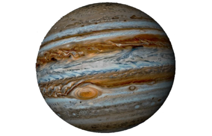
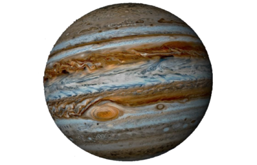

პლანეტა
მერკური
მერკური (მზიდან დაშორებულია 0,4 ასტრონომიული ერთეულით) მზესთან მდებარე უახლოესი და მზის სისტემაში ყველაზე პატარა პლანეტაა (0,055 დედამიწის მასა). მერკურის ბუნებრივი თანამგზავრები არ ჰყავს. მას ძალიან უმნიშვნელო ატმოსფერო აქვს, რომელიც იმ ატომებისგან შედგება, რომელიც მზიური ქარებიდან მოხვდა მის ზედაპირზე. მერკურის შედარებით დიდი რკინის ბირთვი და თხელი მანტია ჯერჯერობით ადეკვატურად არ არის ახსნილი.
პლანეტა
ვენერა
ვენერა (მზიდან დაშორებულია 0,7 ასტრონომიული ერთეულით) თითქმის დედამიწის ზომისაა (0,815 დედამიწის მასა) და ჩვენი პლანეტის მსგავსად სქელი სილიკატური მანტია აქვს რკინის ბირთვის გარშემო. ვენერას საკმაოდ მყარი და მკვრივი ატმოსფერო აქვს. პლანეტის წიაღში გეოლოგიური აქტივობები შეინიშნება. თუმცა, ის დედამიწაზე ბევრად მშრალია და მისი ატმოსფეროს სიმკვრივე ჩვენი პლანეტის სიმკვრივეს 9-ჯერ აღემატება. ვენერას ბუნებრივი თანამგზავრები არ ჰყავს. ის მზის სისტემაში ყველაზე ცხელი პლანეტაა (მიუხედავად იმისა, რომ მეორეა მზიდან დაშორების მიხედვით), რომლის ზედაპირის ტემპერატურა 400 °C აღწევს.
პლანეტა
დედამიწა
დედამიწა (მზიდან დაშორებულია 1 ასტრონომიული ერთეულით) შიდა პლანეტებს შორის ყველაზე დიდი და მკვრივია. ჩვენი პლანეტა ცნობილი ერთადერთი ადგილია მზის სისტემაში (და არა მარტო), სადაც სიცოცხლე არსებობს. მისი თხევადი ჰიდროსფერო კლდოვან პლანეტებს შორის უნიკალურია. დედამიწას ასევე ერთადერთი ცნობილი ადგილია, სადაც ტექტონიკური ფილები შეინიშნება. დედამიწის ატმოსფერო რადიკალურად განსხვავდება სხვა პლანეტების ატმოსფეროებისგან.
პლანეტა
მარსი
მარსი (მზიდან დაშორებულია 1,5 ასტრონომიული ერთეულით) დედამიწაზე და ვენერაზე პატარაა (0,107 დედამიწის მასა). მისი ატმოსფერო ძირითადად გაჯერებულია ნახშირორჟანგისგან, ხოლო ზედაპირზე წნევა დაახლოებით 6,1 მილიბარია (დედამიწის 0,6%). მისი ზედაპირი დაფარულია უკიდეგანო ვულკანებით, როგორიცაა ოლიმპოს მთა და ნაპრალიანი ხეობებით, მაგალითად მარინერის ხეობა. ეს კი მიუთითებს იმაზე, რომ გეოლოგიური აქტივობები სულ რაღაც 2 მილიონი წლის წინ აქტიურად ხდებოდა. მარსს წითელ პლანეტადაც მოიხსნიებენ.
პლანეტა
იუპიტერი
იუპიტერი (მზიდან დაშორებულია 5,2 ასტრონომიული ერთეულით) დედამიწაზე 318-ჯერ მასიურია, ხოლო ყველა პლანეტის მასა ერთად რომ ავიღოთ, ამ გიგანტის მასა 2,5-ჯერ მეტი იქნება. ის ძირითადად გაჯერებულია წყალბადისა და ჰელიუმისგან. იუპიტერის ძლიერი წიაღისეული სითბო წარმოქმნის არასტაბილურ მახასიათებლებს, როგორიცაა „დიდი წითელი ლაქა.“ იუპიტერს 66 მთვარე ჰყავს (ჯერჯერობით მეტი არ არის აღმოჩენილი).
პლანეტა
სატურნი
სატურნი (მზიდან დაშორებულია 9,5 ასტრონომიული ერთეულით) ცნობილია თავისი ამოუცნობი და ულამაზესი რგოლური სისტემით. მას იუპიტერის მსგავსი რამდენიმე თვისება აქვს, როგორიცაა ატმოსფერული შედგენილობა და მაგნიტოსფერო. თუმცა, სატურნს იუპიტერის მოცულობის მხოლოდ 60% აქვს და მისი მასის მხოლოდ 1/3-ია, ხოლო დედამიწას 95-ჯერ აჭარბებს.
პლანეტა
ურანი
ურანი (მზიდან დაშორებულია 19,6 ასტრონომიული ერთეულით) დედამიწაზე 14-ჯერ მასიურია და უმსუბუქესია გარე პლანეტებს შორის. ის უნიკალურია პლანეტებს შორის, რადგან მზეს „მხარზე წამოწოლილი“ უვლის გარშემო. მისი ღერძული დახრა ეკლიპტიკის მიმართ 90 გრადუსამდეა. მისი ბირთვი გაცილებით ცივია, ვიდრე სხვა გაზური გიგანტებისა. ურანი ძალიან მცირე რაოდენობის სითბოს ასხივებს კოსმოსში.
პლანეტა
ნეპტუნი
ნეპტუნი (მზიდან დაშორებულია 30 ასტრონომიული ერთეულით) ურანზე ოდნავ პატარაა, მაგრამ მასზე მასიურია (17 დედამიწის მასა), ანუ უფრო მეტი სიმკვრივე აქვს. ის უფრო მეტ წიაღისეულ სითბოს ასხივებს, მაგრამ სატურნისა და იუპიტერის ოდენობისას ვერა. ნეპტუნს 13 ბუნებრივი თანამგზავრი ჰყავს. მათგან უდიდესი ტრიტონი გეოლოგიურად აქტიურია, რომლის ზედაპირზეც თხევადი აზოტის გეიზერები შეინიშნება.
პლანეტა
EARTH-
მთვარე
დედამიწის ერთადერთი ბუნებრივი თანამგზავრი. მზის სისტემის ერთ-ერთი უდიდესი ბუნებრივი თანამგზავრი, და უდიდესი თანამგზავრებს შორის ზომის შეფარდებით იმ პლანეტასთან, რომლის გარშემოც ისინი ბრუნავენ. აგრეთვე, დღეს ცნობილი თანამგზავრების სიმკვრივეებს შორის, ის ამ მაჩვენებლით მეორეა (იუპიტერის თანამგზავრ იოს შემდეგ).